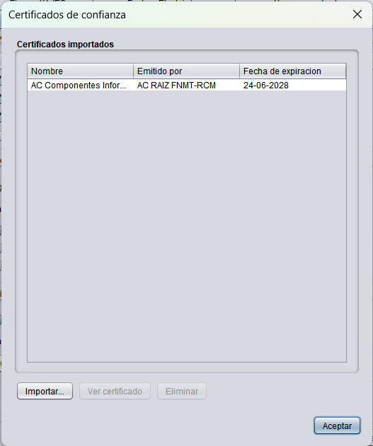
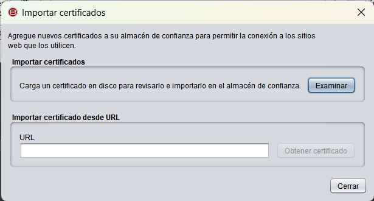
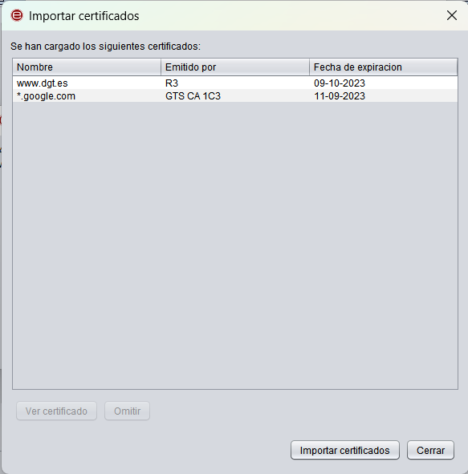

Certificados de confianza
Autofirma realiza conexiones hacia servidores remotos para diversas funciones. En este apartado, se permite importar al almacén de confianza de Autofirma los certificados de los servidores a los que se que conecte Autofirma para que sean reconocidos como de confianza.

Las opciones en esta pantalla son:
- Importar: Al seleccionar esta opción, se abrirá un diálogo donde se permite importar un certificado seleccionando el archivo desde una ruta local o desde una URL. En caso de que se importe localmente, se permite la selección de uno o varios archivos y en caso de una importación mediante URL, se importarán el emisor y sus certificados superiores de la cadena de certificación.

Una vez que se hayan obtenido los certificados, aparecerá la siguiente pantalla con los certificados que se hayan cargado.

Las opciones en esta ventana son:
- Ver certificado: Abre una ventana con la información del certificado que se haya seleccionado en la lista.
- Omitir: Descarta el certificado que se haya seleccionado en la lista para que no sea importado.
- Importar certificados: Importa los certificados indicados en la lista al almacén de confianza de Autofirma.
- Cerrar: Cierra la ventana.
- Ver certificado: Abrirá una ventana con la información del certificado que se haya seleccionado en la lista.
- Eliminar: Permite eliminar del almacén de confianza de Autofirma el certificado seleccionado.
Si se pulsa el botón Aceptar, se cerrará la ventana.